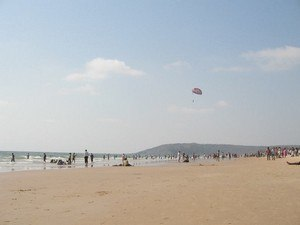
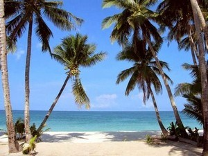
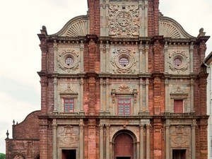
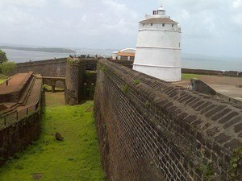

India Tourism
1. Panjim(GOA)
 Beach | City
Goa is India's smallest state by area and the fourth smallest by population.
Located in West India in the region known as the Konkan, it is one of the most popular tourist destinations of India with beautiful beaches and historical sites.
Goa is India's richest state with highest GDP per capita.
The Indian epic Mahabharata refers to the Goa as Goparashtra or Govarashtra, which means ''a nation of Cowherds''.
Goa is a strip of land 110 km long and 60 km wide between the Sahyadri range of the Western Ghats and the Arabian Sea on the west coast of India.
Panaji is the state's capital while Vasco Da Gama is the largest city.
The historic city of Margao still exhibits the cultural influence of the Portuguese.
Goa has a long history of rulers dating back to the 3rd century BC.
It was ruled by Emperor Ashoka followed by numerous rulers like Silharas, Kadamdas, Chalukyans, kings of Deccan, kings of Vijaynagar, .....
Beach | City
Goa is India's smallest state by area and the fourth smallest by population.
Located in West India in the region known as the Konkan, it is one of the most popular tourist destinations of India with beautiful beaches and historical sites.
Goa is India's richest state with highest GDP per capita.
The Indian epic Mahabharata refers to the Goa as Goparashtra or Govarashtra, which means ''a nation of Cowherds''.
Goa is a strip of land 110 km long and 60 km wide between the Sahyadri range of the Western Ghats and the Arabian Sea on the west coast of India.
Panaji is the state's capital while Vasco Da Gama is the largest city.
The historic city of Margao still exhibits the cultural influence of the Portuguese.
Goa has a long history of rulers dating back to the 3rd century BC.
It was ruled by Emperor Ashoka followed by numerous rulers like Silharas, Kadamdas, Chalukyans, kings of Deccan, kings of Vijaynagar, .....
Best time to visit: march to mid-september
Nearest airport: Goa Airport, which is 23 km away from the city.
Nearest railway station: Goa Railway Station; it is well within the city limits.
2. Calangute Beach

Beach
At a distance of 14 km from Panjim Kadamba Bus Stand, 10 km from Mapusa and 41 km from Vasco Da Gama Railway Station, Calangute Beach is the largest Beach in North Goa and one of the best tourist Places to visit in Goa. The beach is often represented in promotion of Goa Tourism. Calangute Beach is another popular attraction not to miss in a Goa tour packages.
Calangute is also called the 'Queen of beaches' in Goa and among the best beaches in Goa. As stories go on, hippies had discovered this beach during the 60's so is it famous since then. Calangute along with Candolim, Baga and Anjuna form part of stretch of beach extending from just outside Panaji city to Fort Aguada. Calangute Beach is a 4 mile long beach that lies between Baga and Candolim beach. It is also among the top beaches of Goa.
The beach is wide with soft sand but the sea is rough. .....
Best time to visit: march to octomber
Nearest airport:Goa Airport, at a mere distance of 43 km from the hill station.
Nearest railway station: Goa Railway Station, which is 30 km away from Munnar.
3. Baga Beach

Beach
At a distance of 15 km from Panjim Kadamba Bus stand, Baga beach is located in North Goa. This beach is bordered by Calangute Beach to its south and Anjuna Beach to its north. Baga Beach starts right where Calangute ends. Named after the Baga Creek that merges into the Arabian Sea on the northern part of the beach, this is one of the most popular among Goa beaches.
Baga Beach is famous for its beach shacks and the delicious sea food that is offered there. The night life at Baga is even more exciting than its days. Baga Beach is the home to some of the hottest night clubs like Tito's and Mambos which are always crowded with the dance freaks. Mackie's Saturday Night Bazaar offers amazing buys for the shopper.
Baga Beach is a popular tourist attraction of Goa. This beach is entertaining from sunrise to sunset. As the sun sets down, party mode is switched-on around this beach. A former hippie hideaway, .....
Best time to visit: May to September
Nearest airport: Goa Airport is 15 km away from Kumarakom.
Nearest railway station: Goa Railway Station is 16 km away.
4. Basilica of bom jesus

Historical & Heritage | Pilgrimage
At a distance of 9 km from Panjim Kadamba Bus Stand and 27 km from Vasco Da Gama Railway Station, the famous Bom Jesus Basilica is part of UNESCO World Heritage Site (Churches & Convents of Goa). It is also called St. Francis Xavier's Tomb. It is one of the top attractions you must include in Goa packages and one of the major heritage sites in Goa state. The church is often represented in promotion of Goa Tourism.
The Basilica of Bom Jesus is dedicated to St. Francis Xavier. The Construction of the church began in 1594 and completed in May 1605. The church is called 'Bom Jesus' meaning 'good Jesus' or 'infant Jesus'. This church is the first Minor Basilica in India and is regarded as one of the best examples of baroque architecture.
The imposing facade built out of black granite in an exquisite combination of the Doric, Corinthian and composite styles, is remarkable for its simplicity. .....
Best time to visit: Any Time; adventure enthusiasts should visit during the monsoon months of July and August to enjoy the perks of trekking and other adventure activities.
Nearest airport: Goa International Airport at Calicut is just 55 km away.
Nearest railway station: Goa Railway Station, which is 32 km away from Basilica .
5. Aguada fort

Historical & Heritage
At a distance of 15 km from Panjim Kadamba Bus Stand, 4 km from Candolim and 49 km from Margao Railway Station, the grand Fort of Aguada was constructed to prevent the entry of ships into the River Mandovi thus protecting old Goa from the attacks of Dutch and Marathas. Aguda Fort is one of the prime Goa tourist places and one of the major heritage sites in Goa state. Aguada Fort is one of the top attractions you must include in Goa packages.
The Aguada Fort was built by the Portuguese colonial rulers on the beach south of Candolim at the shore of the Mandovi River in 1612. A freshwater spring within the fort provided water supply to the ships that used to stop by. This is how the fort got its name 'Aguada' meaning Water. The heart of the fort was protected by two hundred cannons and a deep dry moat, which one still has to cross to get inside.
A central jail and a lighthouse built during .....
Best time to visit:November to early-May
Nearest airport: Goa Airport is just 136 km away.
Nearest railway station: Goa Railway Station is 114 km away.